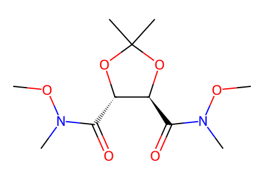
CON(C)C(=O)[C@@H]1OC(C)(C)O[C@H]1C(=O)N(C)OC33 个分子、16 个反应事件、24 条操作记录、2 条路线；7 个结构依据操作推定。源文献冲突与覆盖边界已记录，待独立专家复核。
完整 JSON · 逐步 CSV · 路线序列 · SDF · HRMS 核对
| 事件 | 分子连接 | 报告产率 | Canonical reaction SMILES |
|---|---|---|---|
| E01 | 9 + butenyl-MgBr → 10 | not reported | C=CC[CH2-].CON(C)C(=O)[C@@H]1OC(C)(C)O[C@H]1C(=O)N(C)OC.[Br-].[Mg+2]>>C=CCC[C@@H](O)[C@@H]1OC(C)(C)O[C@H]1C(=O)N(C)OC |
| E02 | 10 + TBSCl → 8 | 8: 78% | C=CCC[C@@H](O)[C@@H]1OC(C)(C)O[C@H]1C(=O)N(C)OC.CC(C)(C)[Si](C)(C)Cl>>CON(C)C(=O)[C@@H]1OC(C)(C)O[C@H]1[C@H]1CC[C@H](CO[Si](C)(C)C(C)(C)C)O1 |
| E03 | 8 + decenyl-MgBr → 11 | 11: 76% | C=CCCCCCCC[CH2-].CON(C)C(=O)[C@@H]1OC(C)(C)O[C@H]1[C@H]1CC[C@H](CO[Si](C)(C)C(C)(C)C)O1.[Br-].[Mg+2]>>C=CCCCCCCCCC(=O)[C@@H]1OC(C)(C)O[C@H]1[C@H]1CC[C@H](CO[Si](C)(C)C(C)(C)C)O1 |
| E04 | 11 → 7 | 7: 89% | C=CCCCCCCCCC(=O)[C@@H]1OC(C)(C)O[C@H]1[C@H]1CC[C@H](CO[Si](C)(C)C(C)(C)C)O1>>C=CCCCCCCCCC(=O)C[C@@H](O)[C@H]1CC[C@H](CO[Si](C)(C)C(C)(C)C)O1 |
| E05 | 7 → 12 | 12: 95% | C=CCCCCCCCCC(=O)C[C@@H](O)[C@H]1CC[C@H](CO[Si](C)(C)C(C)(C)C)O1>>C=CCCCCCCCC[C@H](O)C[C@@H](O)[C@H]1CC[C@H](CO[Si](C)(C)C(C)(C)C)O1 |
| E06 | 12 + TBSOTf → 13 | 13: 70% | C=CCCCCCCCC[C@H](O)C[C@@H](O)[C@H]1CC[C@H](CO[Si](C)(C)C(C)(C)C)O1.CC(C)(C)[Si](C)(C)OS(=O)(=O)C(F)(F)F>>C=CCCCCCCCC[C@@H](C[C@@H](O[Si](C)(C)C(C)(C)C)[C@H]1CC[C@H](CO)O1)O[Si](C)(C)C(C)(C)C |
| E07 | 13 + dodecyl-MgBr → 14 | 14: 80% | C=CCCCCCCCC[C@@H](C[C@@H](O[Si](C)(C)C(C)(C)C)[C@H]1CC[C@H](CO)O1)O[Si](C)(C)C(C)(C)C.[Br-].[CH2-]CCCCCCCCCCC.[Mg+2]>>C=CCCCCCCCC[C@@H](C[C@@H](O[Si](C)(C)C(C)(C)C)[C@H]1CC[C@H](C(=O)CCCCCCCCCCCC)O1)O[Si](C)(C)C(C)(C)C |
| E08 | 14 → 4 | 4: 90% | C=CCCCCCCCC[C@@H](C[C@@H](O[Si](C)(C)C(C)(C)C)[C@H]1CC[C@H](C(=O)CCCCCCCCCCCC)O1)O[Si](C)(C)C(C)(C)C>>C=CCCCCCCCC[C@@H](C[C@@H](O[Si](C)(C)C(C)(C)C)[C@H]1CC[C@H]([C@H](O)CCCCCCCCCCCC)O1)O[Si](C)(C)C(C)(C)C |
| E09 | 6 + bromobutene → 20 | 20: 73% | C=CCCBr.C[C@H]1CC(Sc2ccccc2)C(=O)O1>>C=CCCC1(Sc2ccccc2)C[C@H](C)OC1=O |
| E10 | 20 → 5 | 5: 94% | C=CCCC1(Sc2ccccc2)C[C@H](C)OC1=O>>C=CCCC1=C[C@H](C)OC1=O |
| E11 | 4 + 5 → 15 | 15: 60% | C=CCCC1=C[C@H](C)OC1=O.C=CCCCCCCCC[C@@H](C[C@@H](O[Si](C)(C)C(C)(C)C)[C@H]1CC[C@H]([C@H](O)CCCCCCCCCCCC)O1)O[Si](C)(C)C(C)(C)C>>CCCCCCCCCCCC[C@@H](O)[C@H]1CC[C@H]([C@@H](C[C@H](CCCCCCCCC=CCCC2=C[C@H](C)OC2=O)O[Si](C)(C)C(C)(C)C)O[Si](C)(C)C(C)(C)C)O1 |
| E12 | 15 → 16 | 16: 90% | CCCCCCCCCCCC[C@@H](O)[C@H]1CC[C@H]([C@@H](C[C@H](CCCCCCCCC=CCCC2=C[C@H](C)OC2=O)O[Si](C)(C)C(C)(C)C)O[Si](C)(C)C(C)(C)C)O1>>CCCCCCCCCCCC[C@@H](O)[C@H]1CC[C@H]([C@@H](C[C@H](CCCCCCCCCCCCC2=C[C@H](C)OC2=O)O[Si](C)(C)C(C)(C)C)O[Si](C)(C)C(C)(C)C)O1 |
| E13 | 16 → 2 | 2: 94% | CCCCCCCCCCCC[C@@H](O)[C@H]1CC[C@H]([C@@H](C[C@H](CCCCCCCCCCCCC2=C[C@H](C)OC2=O)O[Si](C)(C)C(C)(C)C)O[Si](C)(C)C(C)(C)C)O1>>CCCCCCCCCCCC[C@@H](O)[C@H]1CC[C@H]([C@H](O)C[C@@H](O)CCCCCCCCCCCCC2=C[C@H](C)OC2=O)O1 |
| E14 | 4 + m-nitrobenzoic-acid + 5 → 18 | 18: 51% | C=CCCC1=C[C@H](C)OC1=O.C=CCCCCCCCC[C@@H](C[C@@H](O[Si](C)(C)C(C)(C)C)[C@H]1CC[C@H]([C@H](O)CCCCCCCCCCCC)O1)O[Si](C)(C)C(C)(C)C.O=C(O)c1cccc([N+](=O)[O-])c1>>CCCCCCCCCCCC[C@H](O)[C@H]1CC[C@H]([C@@H](C[C@H](CCCCCCCCC=CCCC2=C[C@H](C)OC2=O)O[Si](C)(C)C(C)(C)C)O[Si](C)(C)C(C)(C)C)O1 |
| E15 | 18 → 19 | 19: 86% | CCCCCCCCCCCC[C@H](O)[C@H]1CC[C@H]([C@@H](C[C@H](CCCCCCCCC=CCCC2=C[C@H](C)OC2=O)O[Si](C)(C)C(C)(C)C)O[Si](C)(C)C(C)(C)C)O1>>CCCCCCCCCCCC[C@H](O)[C@H]1CC[C@H]([C@@H](C[C@H](CCCCCCCCCCCCC2=C[C@H](C)OC2=O)O[Si](C)(C)C(C)(C)C)O[Si](C)(C)C(C)(C)C)O1 |
| E16 | 19 → 1 | 1: 94% | CCCCCCCCCCCC[C@H](O)[C@H]1CC[C@H]([C@@H](C[C@H](CCCCCCCCCCCCC2=C[C@H](C)OC2=O)O[Si](C)(C)C(C)(C)C)O[Si](C)(C)C(C)(C)C)O1>>CCCCCCCCCCCC[C@H](O)[C@H]1CC[C@H]([C@H](O)C[C@@H](O)CCCCCCCCCCCCC2=C[C@H](C)OC2=O)O1 |

CON(C)C(=O)[C@@H]1OC(C)(C)O[C@H]1C(=O)N(C)OC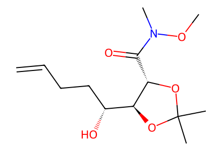
C=CCC[C@@H](O)[C@@H]1OC(C)(C)O[C@H]1C(=O)N(C)OC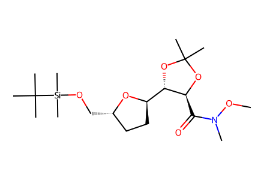
CON(C)C(=O)[C@@H]1OC(C)(C)O[C@H]1[C@H]1CC[C@H](CO[Si](C)(C)C(C)(C)C)O1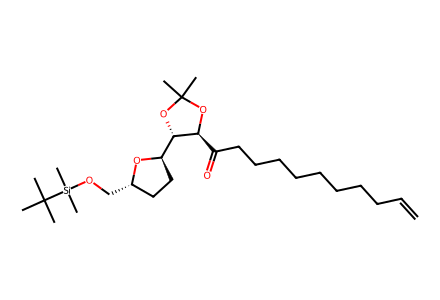
C=CCCCCCCCCC(=O)[C@@H]1OC(C)(C)O[C@H]1[C@H]1CC[C@H](CO[Si](C)(C)C(C)(C)C)O1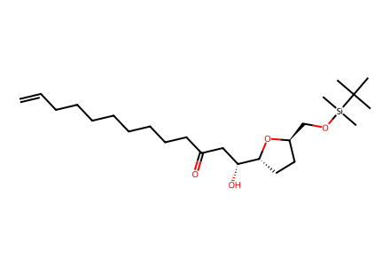
C=CCCCCCCCCC(=O)C[C@@H](O)[C@H]1CC[C@H](CO[Si](C)(C)C(C)(C)C)O1C=CCCCCCCCC[C@H](O)C[C@@H](O)[C@H]1CC[C@H](CO[Si](C)(C)C(C)(C)C)O1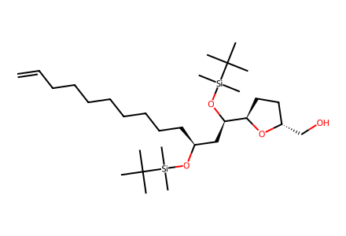
C=CCCCCCCCC[C@@H](C[C@@H](O[Si](C)(C)C(C)(C)C)[C@H]1CC[C@H](CO)O1)O[Si](C)(C)C(C)(C)C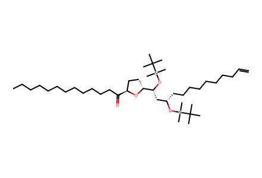
C=CCCCCCCCC[C@@H](C[C@@H](O[Si](C)(C)C(C)(C)C)[C@H]1CC[C@H](C(=O)CCCCCCCCCCCC)O1)O[Si](C)(C)C(C)(C)C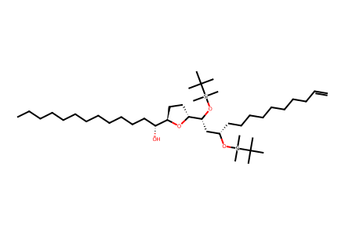
C=CCCCCCCCC[C@@H](C[C@@H](O[Si](C)(C)C(C)(C)C)[C@H]1CC[C@H]([C@H](O)CCCCCCCCCCCC)O1)O[Si](C)(C)C(C)(C)CC=CCCCCCCCC[C@@H](C[C@@H](O[Si](C)(C)C(C)(C)C)[C@H]1CC[C@H]([C@@H](O)CCCCCCCCCCCC)O1)O[Si](C)(C)C(C)(C)C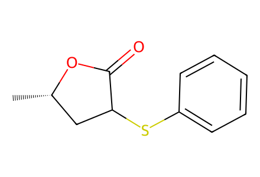
C[C@H]1CC(Sc2ccccc2)C(=O)O1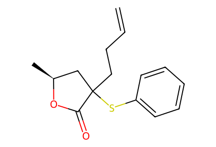
C=CCCC1(Sc2ccccc2)C[C@H](C)OC1=O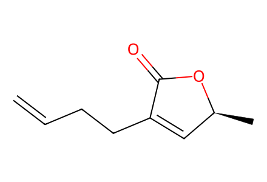
C=CCCC1=C[C@H](C)OC1=O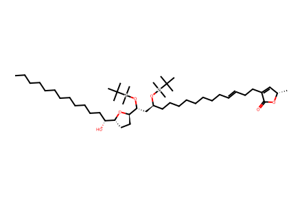
CCCCCCCCCCCC[C@@H](O)[C@H]1CC[C@H]([C@@H](C[C@H](CCCCCCCCC=CCCC2=C[C@H](C)OC2=O)O[Si](C)(C)C(C)(C)C)O[Si](C)(C)C(C)(C)C)O1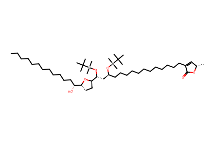
CCCCCCCCCCCC[C@@H](O)[C@H]1CC[C@H]([C@@H](C[C@H](CCCCCCCCCCCCC2=C[C@H](C)OC2=O)O[Si](C)(C)C(C)(C)C)O[Si](C)(C)C(C)(C)C)O1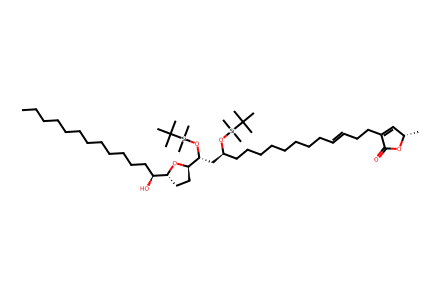
CCCCCCCCCCCC[C@H](O)[C@H]1CC[C@H]([C@@H](C[C@H](CCCCCCCCC=CCCC2=C[C@H](C)OC2=O)O[Si](C)(C)C(C)(C)C)O[Si](C)(C)C(C)(C)C)O1CCCCCCCCCCCC[C@H](O)[C@H]1CC[C@H]([C@@H](C[C@H](CCCCCCCCCCCCC2=C[C@H](C)OC2=O)O[Si](C)(C)C(C)(C)C)O[Si](C)(C)C(C)(C)C)O1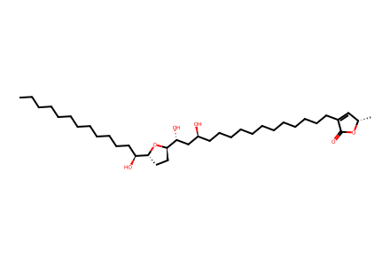
CCCCCCCCCCCC[C@H](O)[C@H]1CC[C@H]([C@H](O)C[C@@H](O)CCCCCCCCCCCCC2=C[C@H](C)OC2=O)O1CCCCCCCCCCCC[C@@H](O)[C@H]1CC[C@H]([C@H](O)C[C@@H](O)CCCCCCCCCCCCC2=C[C@H](C)OC2=O)O1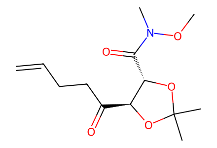
C=CCCC(=O)[C@@H]1OC(C)(C)O[C@H]1C(=O)N(C)OC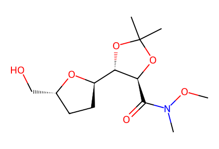
CON(C)C(=O)[C@@H]1OC(C)(C)O[C@H]1[C@H]1CC[C@H](CO)O1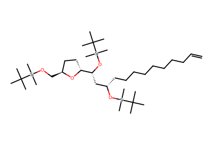
C=CCCCCCCCC[C@@H](C[C@@H](O[Si](C)(C)C(C)(C)C)[C@H]1CC[C@H](CO[Si](C)(C)C(C)(C)C)O1)O[Si](C)(C)C(C)(C)C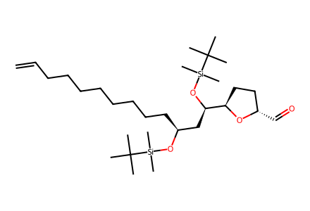
C=CCCCCCCCC[C@@H](C[C@@H](O[Si](C)(C)C(C)(C)C)[C@H]1CC[C@H](C=O)O1)O[Si](C)(C)C(C)(C)C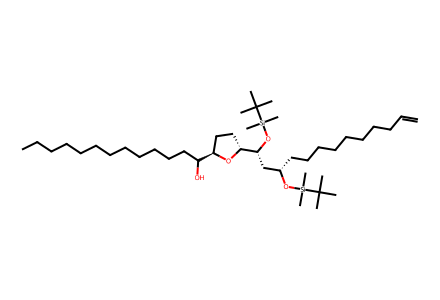
C=CCCCCCCCC[C@@H](C[C@@H](O[Si](C)(C)C(C)(C)C)[C@H]1CC[C@H](C(O)CCCCCCCCCCCC)O1)O[Si](C)(C)C(C)(C)C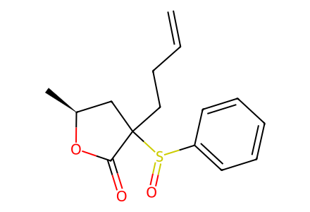
C=CCCC1(S(=O)c2ccccc2)C[C@H](C)OC1=O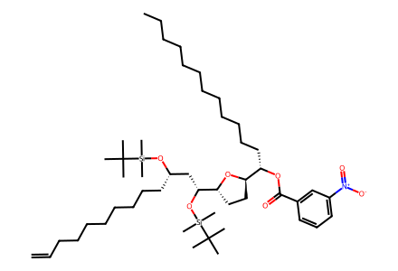
C=CCCCCCCCC[C@@H](C[C@@H](O[Si](C)(C)C(C)(C)C)[C@H]1CC[C@H]([C@H](CCCCCCCCCCCC)OC(=O)c2cccc([N+](=O)[O-])c2)O1)O[Si](C)(C)C(C)(C)C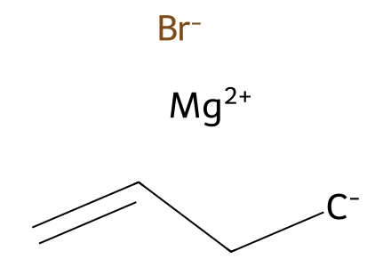
C=CC[CH2-].[Br-].[Mg+2]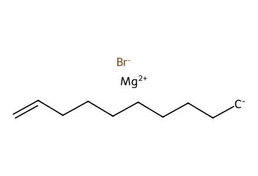
C=CCCCCCCC[CH2-].[Br-].[Mg+2]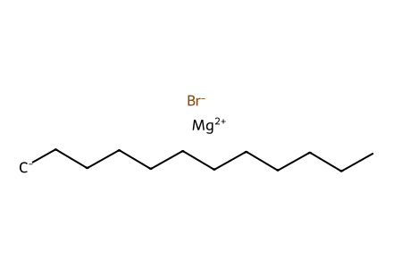
[Br-].[CH2-]CCCCCCCCCCC.[Mg+2]
CC(C)(C)[Si](C)(C)Cl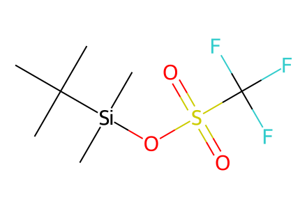
CC(C)(C)[Si](C)(C)OS(=O)(=O)C(F)(F)F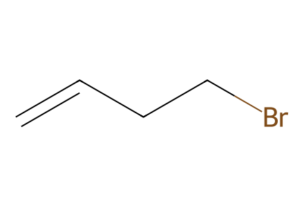
C=CCCBr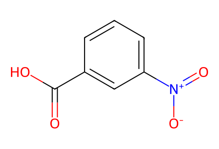
O=C(O)c1cccc([N+](=O)[O-])c1